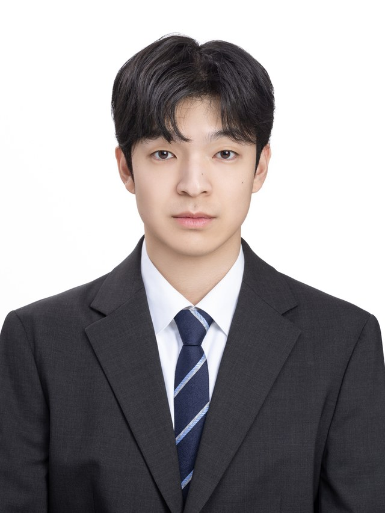

available for hire · 신입 AI 엔지니어
이훤 Hwon Lee
멀티모달 RAG · LangGraph 에이전트를 풀스택으로 구현하는 AI 엔지니어
논문 공저 · Zenodo · 2저자
풀스택 · 기획 → 배포
PM · 팀장 ×2 · 부팀장 ×1
사내 AI 논문 강의 · 반장
2,000h
AI 부트캠프
(945h + 1,115h)
01 about
복잡한 AI를, 누구나 쓸 수 있게
// "AI를 만드는 사람"을 넘어 "AI를 쓰게 만드는 사람"
AI를 깊이 연구하는 일과, 그 결과를 누구나 쓰는 제품으로 만드는 일을 함께 해 왔습니다. 3개 모델로 임베딩한 결과를 독립된 축으로 결합해 올바른 파일을 가려내는 변별력을 단일 모델 대비 27.5배로 높인 멀티모달 검색 기법을 논문으로 공저(2저자)했고, 그 검색 엔진 위에 로컬 RAG 응답 시스템 AIMODE를 직접 만들었습니다.
무엇을 만들든 "전문 지식이 없는 사람도 이걸 쓸 수 있는가?"를 첫 기준으로 삼습니다. 집안 사정으로 학업을 멈추고 수년간 생계를 책임진 뒤 다시 이 길로 돌아왔고, 복귀를 위해 2,000시간(945h + 1,115h, 13개월)의 부트캠프를 거쳤습니다. 첫 과정에서 뒤처진 경험 때문에, 두 번째 과정에서는 반장을 맡아 매주 일요일 논문·최신 AI를 직접 정리해 강의했고 한 명의 낙오자도 없이 모두가 수료했습니다.
★ flagship · 공저 논문
DB_Insight · Tri-CHEF
파일명을 몰라도 "내용"으로 찾고, 로컬 문서를 근거로 답까지 만들어주는 RAG 데스크탑 앱. 핵심 알고리즘 Tri-CHEF를 6인 공저 논문으로 공개했고, 저는 2저자(Technical Master)로 참여했습니다.
60 → 93%
Top-1 신뢰도 (1축 → 3축 결합)
시각 축 · Real
SigLIP2
이미지·프레임의 시각적 내용을 인코딩.
언어 축 · Imag
BGE-M3
텍스트·캡션·STT 인코딩 (+스파스 인덱스).
구조 축 · Z
DINOv2
이미지의 구조·형태 특징을 인코딩.
Query → SigLIP2(시각) + BGE-M3(언어) + DINOv2(구조) → Complex Hermitian Fusion → 유사도 점수
db_insight/핵심 기여부팀장 · 2저자
- 가중합 대신 세 인코더를 복소 임베딩의 직교 축에 배정하고 에르미트 절대값으로 결합해, 한 모델이 점수를 독점하지 않고 각 모델의 근거 축을 보존했습니다.
- 스캔 후 전후 420자 자르기로 청크 문제를 해결하고, '검색 → 스캔 → 선택 → 답변 작성'의 LangGraph 에이전트(AIMODE)를 직접 개발했습니다.
- 환각 차단(신뢰도 게이트)과 Ollama 로컬 LLM으로 데이터 외부 유출 0 — 출처 페이지까지 표시합니다.
- 음악 도메인은 의미축이 겹치지 않아 의도적으로 융합하지 않고 CLAP+Chromaprint로 분리 처리 — "언제 융합하지 말아야 하는가"를 설계로 구분했습니다.
SigLIP2BGE-M3DINOv2Complex-HermitianLangGraphOllamaChromaDBElectron
자체 코퍼스 · 배포 시스템
이미지 2,390 · 문서 34,661p · 영상 205 · 오디오 117
문서 R@5 (Leave-One-Out)96.00%
문서 MRR0.8893
Top-1 신뢰도 (한국어 15문항)93%
이미지 검색 p95 지연77 ms
공개 벤치 · MIRACL-ko
213 dev 쿼리 · 위키피디아 1.486M passages
텍스트(Im) 축 nDCG@1077.82%
BGE-M3 dense baseline 대비+7.92pp
검색 방식exact FAISS
수치 범위 안내. MIRACL-ko 77.82%는 텍스트(언어) 축 단독 성능이며 멀티모달 융합 결과가 아닙니다. 멀티모달 결합의 기여는 자체 코퍼스 평가(R@5·MRR·Top-1 신뢰도)로 별도 측정했습니다. 본 연구는 SOTA를 주장하지 않습니다.